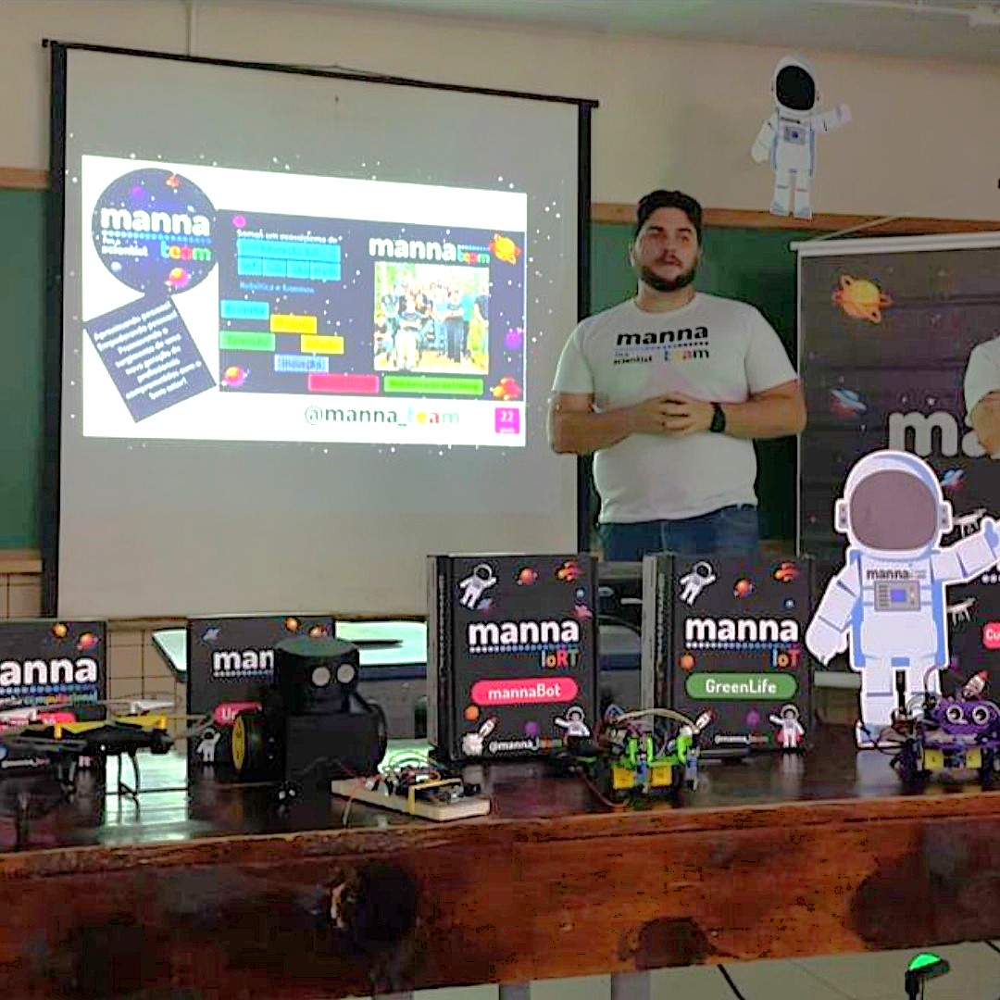
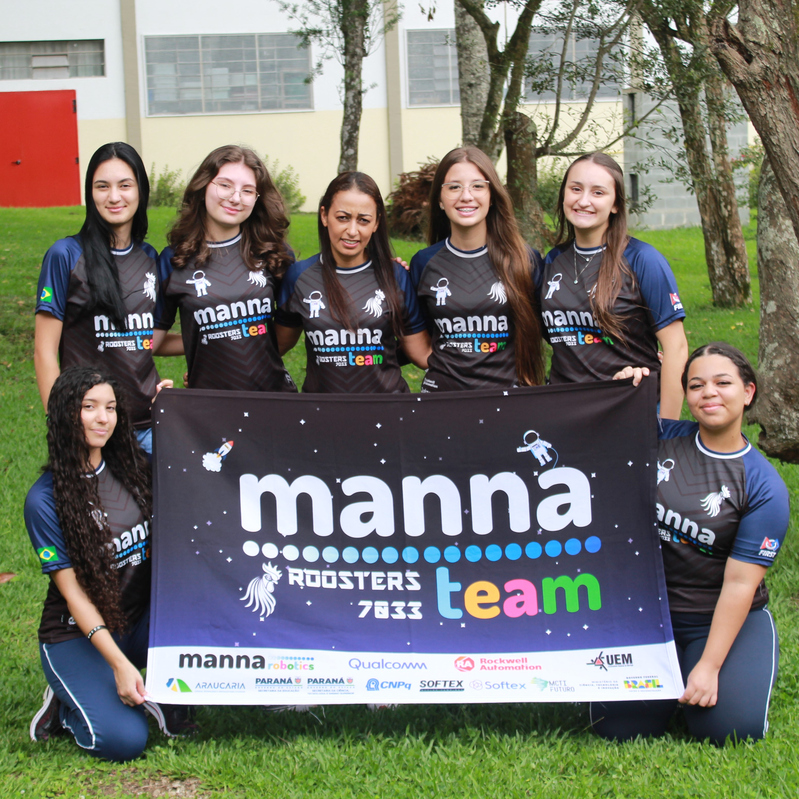
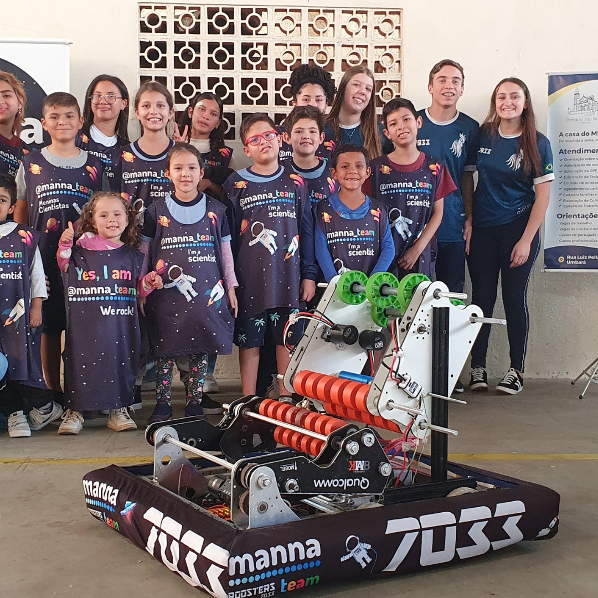
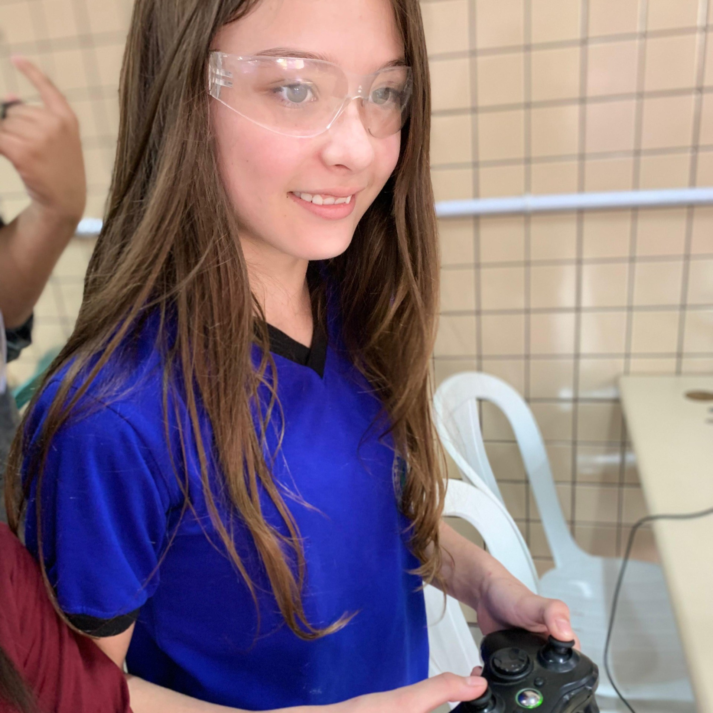
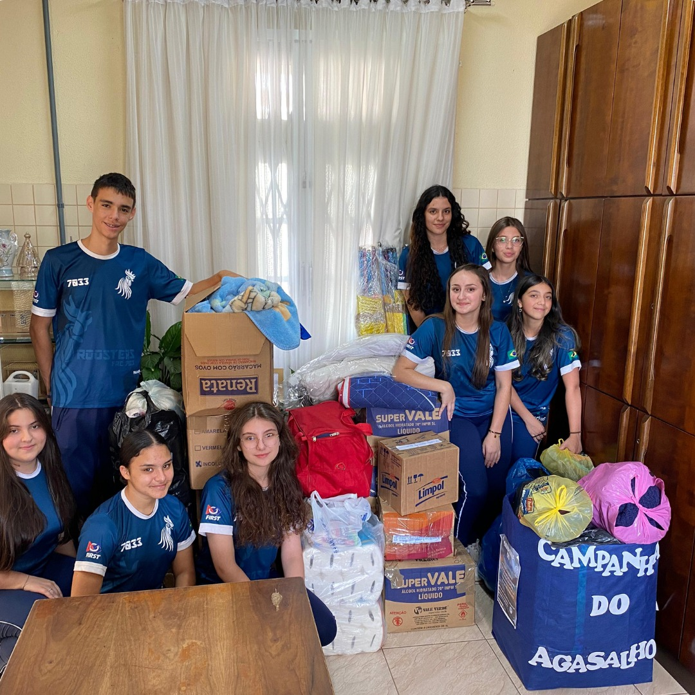

Em nossa equipe temos diversos projetos com o objetivo de conseguirmos influenciar e conectar os jovens com uma tecnologia na qual não tem contato no seu dia a dia. Com isso trazendo cada vez mais um conhecimento amplo.

KDT
O KDT (Kit de Desenvolvimento Tecnológico) é um projeto inovador que visa proporcionar conhecimento de forma dinâmica e interativa, impactando já 5.769 pessoas. O kit é composto por uma variedade de atividades, incluindo FlashCards, MannaBot, uma plataforma de robótica educacional, GteenLife, um simulador de ecossistemas, e um kit de pilotagem de drones, além de outras atividades de STEAM. Com o KDT, nosso objetivo é desenvolver habilidades em tecnologia e inovação, fomentar a criatividade e resolução de problemas, e inspirar interesse em carreiras em STEAM. É um exemplo concreto de nosso compromisso em empoderar indivíduos por meio da educação e tecnologia, proporcionando uma experiência de aprendizado única e eficaz KDT
GIRLS FOR THE WORLD
O projeto "Girls for the World" é uma iniciativa inspiradora que visa aumentar a representatividade feminina na engenharia e áreas relacionadas à Ciência, Tecnologia, Engenharia e Matemática (STEM). Por meio de palestras motivadoras e ações práticas, o projeto busca despertar o interesse e empoderar meninas para seguir carreiras nessas áreas. Em nosso colégio, o projeto já alcançou impressionantes resultados, atingindo cerca de 765 meninas e inspirando-as a explorar suas habilidades e paixões em STEAM. Nossa equipe é um exemplo de sucesso, com 60% de mulheres na área técnica, demonstrando que é possível alcançar equidade de gênero em setores tradicionalmente dominados por homens. O "Girls for the World" promove igualdade de oportunidades e diversidade, inspirando futuras líderes e inovadoras em um ambiente inclusivo e acolhedor para todas. O sucesso do projeto é um testemunho do poder da educação e do empoderamento feminino. Continuaremos trabalhando para inspirar e capacitar mais meninas a se tornarem líderes em STEM, transformando o futuro e quebrando barreiras de gênero.

CASA DO MIGRANTE
CASA DO MIGRANTE A Casa do Migrante oferece esperança e apoio a famílias migrantes, incluindo emprego, documentos e moradia. Além disso, apresenta o KDTs (Conhecimento, Desenvolvimento e Tecnologia) às crianças, utilizando a STEAM (Ciência, Tecnologia, Engenharia, Arte e Matemática) para:
O objetivo é iluminar os caminhos e sonhos das crianças, ampliando suas perspectivas futuras


PROJETO STEAM
O programa STEAM é uma iniciativa educacional extracurricular que combina Ciência, Tecnologia, Engenharia, Arte e Matemática para desenvolver habilidades e conhecimentos em crianças e adolescentes. Ele oferece uma variedade de atividades, incluindo aulas de robótica e programação, workshops de projeto e desenvolvimento de protótipos, competições de robótica e hackathons, visitas a empresas de tecnologia e palestras com especialistas. O objetivo do programa é desenvolver habilidades técnicas e criativas nos alunos, melhorar sua confiança e autoestima, e prepará-los para carreiras em tecnologia e engenharia. Além disso, o STEAM inspira uma nova geração de inovadores e líderes, proporcionando uma educação interdisciplinar e prática para o sucesso no século XXI. Com o programa STEAM, crianças e adolescentes têm a oportunidade de aprender de forma lúdica e interativa, desenvolvendo habilidades valiosas para o futuro. É uma excelente opção para pais e educadores que buscam uma educação de qualidade e inovadora para os jovens.
DOE
O projeto DOE (Doar, Oportunizar e Empoderar) foi criado para incentivar a solidariedade em nossa comunidade escolar, promovendo arrecadações de doações entre os alunos. Com ele, conseguimos realizar diversas ações solidárias, como a doação de roupas e alimentos para famílias em Curitiba e no Rio Grande do Sul, além da arrecadação de lacres para a compra de uma cadeira de rodas. O projeto também promoveu campanhas de arrecadação de brinquedos e materiais escolares para comunidades carentes. O DOE tem se mostrado uma maneira eficaz de envolver os alunos em práticas de cidadania e responsabilidade social, sempre com o objetivo de impactar positivamente a vida de quem mais precisa.
